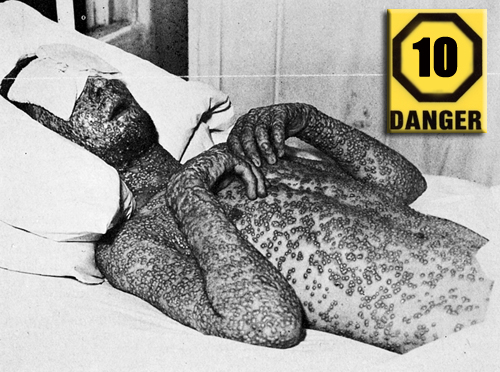

Putine cuvinte au o incarcatura atat de macabra si o istorie atat de dureroasa precum termenul “ciuma”. Oroarea si mizeria au stapanit o omenire parca blestemata, intr-o vreme in care bolile infectioase scriau istoria si faceau legea. Dusmani invizibili au decimat populatii, au pus capat familiilor, si in final, au facut intr-un timp extrem de scurt mai multe victime decat orice razboi.
Oamenii primitivi nu erau feriti de boli. Ei duceau o batalie zilnica impotriva microbilor si bacteriilor care le invadau apa, hrana si mediul. Cu toate acestea, in acele vremuri indepartate o izbucnire epidemica nu avea repercusiuni decat la nivel local, manifestandu-se in focare marunte care se ofileau rapid. Din fericire pentru stramosii nostri, ei nu au fost nevoiti sa infrunte nimic asemanator cu ceea ce urma sa vina in timpurile ce i-au urmat. Abia cand oamenii au inceput sa se stranga laolalta in comunitati rurale si apoi urbane, formand populatii numeroase, raspandirea bolilor contagioase au atins proportii epidemice.
O epidemie se declanseaza atunci cand boala afecteaza un numar foarte mare de oameni care formeaza o populatie dintr-o zona geografica restransa. Atunci cand numarul persoanelor afectate creste proportional cu marirea ariei de actiune, vorbim despre o pandemie. Umanitatea a devenit mai expusa atacurilor microbiene odata cu domesticirea animalelor, care sunt, la randul lor, purtatoare de virusi transmisibili. Pe masura ce oamenii isi mareau teritoriile, contactul cu microbi pe care altfel nu ar fi avut sansa sa ii intalneasca, a devenit o realitate necrutatoare. Prin depozitarea hranei au fost atrase in spatiul uman si alte specii de rozatoare purtatoare de boli.
Per total, progresul sustinut al rasei umane a adus cu sine si mari neajunsuri. Insa lucrurile nu se sfarsesc aici. Oamenii au inceput sa creeze baraje si lacuri artificiale in apropierea comunitatilor. Apa statuta, un mediu prielnic pentru microbi, a atras si o tantarii, care s-au transformat repede in transmitatori perseverenti de maladii.
Pe masura ce revolutia tehnologica si industriala a permis calatoriile rapide de la un capat la altul al
lumii, epopeea microbilor a intrat intr-o noua era. In mod ironic, tocmai curiozitatea si inteligenta umana
care au generat noi si noi stadii de evolutie au fost si cele care au pregatit terenul pentru cel mai temut
si invizibil dusman: microbul. Omenirea nu trece singura prin procesul evolutiei, microbii o urmeaza
pretutindeni.
Inainte ca exploratorii europeni, cuceritorii si colonizatorii sa invadeze Lumea Noua, la inceputul anilor 1500, Americile gazduiau o populatie estimata la 100 de milioane de nativi indieni. In timpul secolelor ce au urmat, bolile epidemice au miscorat drastic numarul acestora, reducandu-l la un numar cuprins intre 5 si 10 milioane. Incasii sau aztecii au construit orase impunatoare, insa nu au avut la dispozitie indeajuns de mult timp pentru a locui pe o perioada indelungata in comunitati, astfel incat sistemul lor imunitar nu era la fel de pregatit atacurilor bacteriologice precum cel al europenilor. In America, nici domesticirea animalelor salbatice nu a avut loc la o scara asemanatoare cu cea europeana.
Atunci cand europenii au acostat, pe langa prapadul material pe care l-au savarsit, au adus cu ei un blestem mult mai mare: moartea invizibila. Populatiile bastinase au fost victime usoare in fara microbilor care au calatorit peste ape prin intermediul gazdelor umane europene, care isi dezvoltasera deja imunitatea in cazul unor paraziti. Bastinasii americani nu aveau insa asa ceva, fiind adaptati la propriile conditii de mediu. Printre cele mai groaznice maladii dezlantuite in Lumea Noua s-a numarat si variola.
Virusul variolei a inceput sa afecteze oamenii cu mii de ani in urma, iar cea mai comuna forma a acestuia se traducea in mortalitate in proportie de 30%. Simptomele variolei sunt febra ridicata, mancarimi si eruptii la nivelul corpului. Boala se raspandeste prin contactul direct cu persoana infectata sau pe calea aerului, in cazul unui spatiu inchis si ingust.
In ciuda descoperirii vaccinului, in 1796, epidemiile de variola au continuat sa ameninte populatia globului. In 1967, virusul a ucis doua milioane de oameni si a afectat mai multe milioane in intreaga lume. In acelasi an, Organizatia de Sanatate Mondiala a pornit o campanie de eradicare a virusului, prin vaccinarea maselor. In consecinta, 1977 a fost ultimul an in care au mai fost semnalizate cazuri de variola. Eliminat din lumea naturala, virusul exista, in prezent, numai in laborator.
In 1918, intregul mapamond isi concentra atentia asupra finalului Primului Razboi Mondial. Pana la sfarsitul anului, numarul de vieti pierdute in razboi ajungea la 37 de milioane. Soldatii supravietuitori nu isi doreau decat sa ajunga mai repede in mijlocul familiilor lor. Insa fericirea revederii avea sa fie de scurta durata. O noua maladie isi face simtita prezenta. Unii i-au zis gripa spaniola, in vreme ce altii au intiparit-o in memorie drept "Gripa din 1918". Oricare i-ar fi denumirea, rezultatele pot fi traduse intr-un singur mod: 20 de milioane de victime in numai cateva luni. Timp de un an, gripa si-a urmat cursul, transformandu-se intr-o unealta mondiala a mortii. La nivel global, numarul victimelor s-a ridicat la o cifra astronomica: intre 50 si 100 de milioane de oameni. Din cauza numarului mare de persoane decedate si a ariei intinse afectate, multi considera gripa din 1918 ca fiind cea mai mare pandemie din istoria omenirii.
Chiar daca vorbim despre gripa, o afectiune tratabila in prezent, virusul care a provocat ravagiile in acel an era diferit. Era vorba de virusul aviar H1N1. Cercetatorii suspectau ca boala s-a transferat de la pasari la oameni in vestul mijlociu american. A fost denumita ulterior gripa spaniola dupa ce boala a facut in Spania nu mai putin de 8 milioane de victime. La nivel global, sistemul imunitar uman nu era pregatit pentru a face fata acestei amenintari. Miscarile masive de trupe de la sfarsitul primului razboi mondial au permis virusului sa se raspandesca pana la atingerea unor proportii pandemice.
Desi aceasta forma a bolii era cu mult mai periculoasa decat o gripa obisnuita, simptomele erau asemanatoare: febra, greata, dureri si diaree. Unii pacienti prezentau si pete negre pe obraji. Pe masura ce plamanii se umpleau cu lichid, victimele se confruntau cu riscul de a ramane fara oxigen. In decursul unui an, virusul a suferit o mutatie, transformandu-se intr-o forma mai putin periculoasa. Multi dintre oamenii de astazi au dezvoltat o anumita imunitate, o mostenire de la cei care au supravietuit virusului.
Care pline cu cadavre, familii intregi aflate pe patul de moarte, inchise in propria casa, regi si tarani pusi pe acelasi loc in fata mortii implacabile… Atunci cand vine vorba despre epidemii, putine inspira mai multa groaza decat Moartea Neagra. Considerata a fi prima pandemie adevarata, moartea neagra a ucis jumatate din populatia Europei din anul 1348, ajungand pana in China si India. "Marea moarte" a urmat caile razboiului si caile comerciale, decimand orase intregi si alterand permanent structurile politice, comerciale sau sociale.
Pentru multa vreme s-a crezut ca moartea neagra este o plaga epidemica, care se manifesta intr-o forma bubonica prin intermediul sobolanilor purtatori de paraziti, si intr-o forma pneumonica, pe calea aerului. Studiile recente par sa conteste acest lucru. Unii cercetatori sustin ca infricosatoarea moarte neagra nu era altceva decat manifestarea unui virus hemoragic, similar cu ebola, care se manifesta prin pierderi masive de sange. In prezent, cercetarile asupra ramasitelor umane posibilelor victime ale "ciumei" continua in speranta ca vor fi descoperite dovezi genetice care sa sustina aceste noi teorii.
Insa daca a fost vorba despre ciuma, atunci Moartea Neagra este inca printre noi. Cauzata de bacteria Yersinia pestis, boala poate constitui in continuare o amenintare in zonele foarte sarace, infestate de soareci si de sobolani. Medicina moderna poate trata cu usurinta aceasta afectiune in primele stadii, anulandu-i potentialul mortal. Simptomele includ glande inflamate, febra, tuse, respiratie anevoioasa si, in majoritatea cazurilor, eliminarea sangelui pe cale orala.
Malaria nu reprezinta chiar o noutate in lumea bolilor epidemice. Mentiuni ale impactului devastator pe care l-a avut asupra omenirii dateaza de mai bine de 4.000 de ani, iar meritul apartine invatatilor greci care au lasat marturii scrise despre aceasta maladie. Istorii in care tantarul este indicat ca fiind responsabil de cauzarea si raspandirea acestei boli rasar des in textele medicale indiene si chinezesti. Inca de pe atunci, oamenii invatati au facut conexiuni importante intre malarie si apele statute in care se inmulteau tantarii.
Malaria este cauzata de patru specii de microbi Plasmodium, prezenti la alte doua specii: tantari si oameni. Atunci cand tantarii infectati se hranesc cu sange uman, acestia transmit microbii. Odata aflati in sange, acestia cresc in interiorul celulelor rosii, distrugandu-le pe parcursul procesului. Simptomele includ febra, frisoane, transpiratie excesiva, dureri musculare si de cap. Manifestarile bolii pot fi medii sau pot conduce catre deces.
In 1906, Statele Unite ale Americii a angajat peste 26.000 de muncitori pentru a construi Canalul Panama. Dintre acestia, mai mult de 21.000 au fost spitalizati in urma contactarii malariei. Soldatii au fost printre cei mai afectati de aceasta boala. In timpul razboiului civil american, peste 1.316.000 de barbati au contactat virusul, dintre care 10.000 au murit. In timpul primului razboi mondial, malaria a imobilizat fortele britanice, franceze si germane timp de trei ani. Aproape 60.000 de soldati au murit de malarie in Africa si Sudul Pacificului in timpul celui de-al doilea razboi mondial.
Chiar daca au fost depuse eforturi extraordinare de eradicare a acestei boli, malaria continua sa puna
probleme mai ales in regiunea sub-sahariana africana, care a fost exclusa din cadrul ariilor stropite cu
insecticide. Anual, intre 350 si 500 de milioane de cazuri au loc in aceasta regiune. Dintre acestea, un
milion se sfarsesc prin deces.
Tuberculoza este una dintre cele mai "longevive" boli pe care oamenii au trebuit sa le infrunte. Ea nu s-a manifestat intr-un episod singular sau sub forma unei epidemii. Radacinile tuberculozei sunt atat de bine infipte in istoria sanitara a omenirii, incat marturii ale ravagiilor pe care le-a provocat se afla atat in stravechi documente scrise, cat si in ADN-ul mumiilor egiptene. Cauzata de catre bacteria Mycobacterium tuberculosis, boala devine extrem de periculoasa, deoarece se transmite pe calea aerului. Tintele bacteriei sunt plamanii, iar boala se manifesta prin dureri in piept, slabiciune, pierdere in greutate, febra, transpiratie nocturna si tuse cu sange. In anumite cazuri, bacteria poate afecta creierul si rinichii.
Incepand cu anii 1600, epidemia de tuberculoza, cunoscuta sub denumirea de Marea Ciuma Alba, a devastat populatia europeana timp de aproximativ 200 de ani, ucigand fiecare al saptelea purtator. Mai tarziu, tuberculoza a devenit o problema constanta in cadrul coloniilor din America. Chiar si spre sfarsitul secolului XIX, 10% din totalul deceselor erau cauzate de tuberculoza.
In 1944, medicii au dezvoltat un antibiotic impotriva microbului, denumit streptomicina. Rezultatele nu au intarziat sa apara si dupa mii de ani de suferinta, umanitatea a obtinut victoria asupra bolii pe care grecii o numeau Phthisis, boala epuizarii. Victoria nu este insa finala. In ciuda descoperirii leacului, tuberculoza continua sa infecteze 8 milioane de oameni, dintre care 2 milioane ii cad victime anual.
Locuitorii Indiei sunt veterani in ceea ce priveste lupta cu holera, insa abia in secolul XIX restul lumii a avut ocazia sa vada cu ce monstru se lupta populatia indiana. In aceasta perioada, cand comertul si turismul au cunoscut o inflorire fara precedent, virusul a avut ocazia unica de a calatori fara pasaport peste granite, catre China, Japonia, Africa de Nord, Estul Mijlociu si Europa. Din secolul XIX pana in prezent au avut loc sase epidemii de holera care au rapus milioane de vieti omenesti.
Holera este cauzata de catre o bacterie intestinala denumita Vibrio cholerae. De regula, manifestarea bolii nu este foarte violenta. Doar cinci procente dintre cei care contracteaza boala manifesta simptome severe de voma, diaree si crampe musculare la nivelul picioarelor, stari care duc catre o deshidratare rapida ce se incheie cu intrarea intr-o stare de soc. Majoritatea sistemelor imunitare sunt in stare sa faca fata infectiei cu holera, insa numai daca pacientii raman hidratati indeajuns de mult pentru a infrange boala. Bacteria se poate transmite prin contact fizic apropiat, insa forma uzuala de transmitere a bacteriei este prin intermediul hranei si al apei.
Comerciantii au fost cei care au adus holera in majoritatea oarselor europene in timpul revolutiei industriale de la inceputul anilor 1800. Initial, s-a crezut ca aerul poluat este cauza acestei boli, insa cand sistemele sanitare si de canalizare s-au imbunatatit, s-a observat aproape instant o scadere insemnata a numarului de imbolnaviri. In decadele urmatoare, holera a devenit o amintire, un tribut pe care omenirea l-a platit in schimbul civilizatiei si modernizarii. Cu toate acestea, in anul 1961 un nou tip de holera isi facea aparitia in Indonezia, pentru a se raspandi in cele din urma in intreaga lume. Tacuta pandemie continua si in prezent. In 1991, 300.000 de oameni s-au imbolnavit de holera, iar dintre acestia 4 000 au decedat in urma contractarii bacteriei.
Aparitia SIDEI in anii '80 a dus la izbucnirea unei pandemii care a facut peste 25 de milioane de victime din 1981 pana in prezent. Conform statisticilor recente, in jur de 33,3 milioane de oameni sunt identificati ca purtatori ai virusului HIV. Dintre acestia, numai in anul 2007 au decedat 2,1 milioane. SIDA (AIDS - acquired immune deficiency syndrome) este cauzata de catre virusul uman imunodeficitar (human immunodeficiency virus - HIV).
Virusul se raspandeste prin contactul cu sangele infectat, sperma sau alte fluide corporale si ataca direct sistemul imunitar uman. Odata afectat, acesta nu mai poate face fata unor infectii banale, care nu ar constitui o problema pentru un organism sanatos. Virusul HIV devine SIDA atunci cand sistemul imunitar este sever afectat.
Cercetatorii medicali sunt de parere ca virusul provine de la anumite specii de maimute, insa a suferit o mutatie atunci cand a fost transmis la om, undeva la jumatatea secolului XX. In timpul anilor 70, Africa se lupta cu saracia, razboaiele si somajul in zonele urbane. In acest context, prostitutia si abuzul de droguri au aparut ca o portita de evadare pentru unii, insa aceste obiceiuri nocive nu au facut decat sa ajute la raspandirea acestui virus periculos, pana la cucerirea intregii planete.
In prezent, nu exista un tratament impotriva bolii, insa exista medicamentatie capabila sa tina in frau declansarea bolii in cazul purtatorilor si medicamente pentru combaterea simptomelor alternative care se traduc prin infectii si boli. In lipsa unui tratament care sa puna capat flagelului, au fost desfasurate nenumarate campanii de informare a populatiilor asupra modului in care se transmite SIDA.
Odata cu descoperirea si cucerirea noilor teritorii, au inceput si marile schimburi. De la cele demografice sau comerciale pana la schimburile de …microbi. S-a dovedit ca oamenii sunt dotati cu sisteme imunitare inteligente, adaptate la propriul mediu. Astfel incat, oamenii inzestrati sa reziste unor boli serioase intr-o parte, odata stramutati puteau fi ucisi de o bacterie banala. Este si cazul comertului cu sclavi africani adusi in America, care nu au venit cu mana goala, ci cu un intreg "bagaj" bacteriologic.
Printre bolile care au "navigat" din Africa in America se numara si febra galbena. Manifestarea bolii a fost atat de severa incat a decimat colonii si orase intregi. Cand imparatul Napoleon a trimis o armata de 33.000 de soldati in America de Nord, 29.000 dintre acestia au fost rapusi de febra galbena. Napoleon a fost atat de socat de pierderile suferite, incat a decis ca nu merita sa isi asume un risc atat de mare pentru acest teritoriu, prin urmare Franta a vandut teritoriul Statelor Unite.
Febra galbena, ca si malaria, se transmite prin intermediul muscaturilor de tantari. Simptomele tipice includ febra, frisoane, dureri de cap, dureri musculare si stari de voma. Intensitatea acestora poate varia de la mediu pana la a cauza decesul. Infectiile severe pot duce la sangerari, stare de soc, cedarea rinichilor si ficatului. Degradarea ficatului este cea care cauzeaza ingalbenirea pielii, de unde numele afectiunii. In ciuda tratamentului si masurilor luate, epidemia persista inca in America de Sud si Africa.
Marile epidemii au mici retete de succes: aduna laolalta multi oameni care traiesc in conditii mizere si mediul pentru dezvoltarea celor mai violente si periculoase boli a fost deja creat. Dintre acestia, micutul microb Rickettsia prowazekii se remarca ostentativ, find cel care duce la aparitia uneia dintre cele mai devastatoare boli pe care omenirea a cunoscut-o: tifosul epidemic.
Avand in vedere frecventa sa in cadrul armatelor, a fost numita "febra razboiului". In timpul razboiului de treizeci de ani din Europa (1618 - 1648), tifosul, ciuma si foamea au facut impreuna un numar aproximativ de 10 milioane de victime. In timpul primului razboi mondial, boala a cauzat milioane de decese in Rusia, Polonia si Romania.
Simptomele tifosului epidemic includ migrene, pierderea apetitului si cresterea temperaturii. Febra se instaleaza rapid si este acompaniata de frisoane si greata. Netratata, boala afecteaza circulatia sangvina care se manifesta prin cangrene locale, pneumonie si afectiuni ale rinichilor. Epuizarea provocata de temperatura ridicata poate duce in cele din urma la delir, coma si atac de cord. Tratamentele imbunatatite si conditiile sanitare moderne au incetinit considerabil raspandirea bolii, insa scurte izbucniri mai exista inca in America de Sud, Africa si Asia.
Cercetatorii moderni sunt de parere ca poliomielita a provocat epidemii pentru o perioada foarte lunga de timp, paralizand si omorand sute de mii de copii. In 1952, in Statele Unite erau inregistrate 58.000 de cazuri de poliomielita. Dintre acestea, o treime s-au sfarsit prin instalarea paraliziei la copii, dintre care 3.000 au decedat.
Vinovatul pentru acesta maladie este un virus care ataca sistemul nervos uman. Se transmite prin materiile fecale, iar in mediile nesanitare circulatia virusului se face prin mancare si apa. Primele simptome se manifesta sub forma febrei, oboselii, dureri de cap, stari de voma, dureri ale membrelor si rigiditate. Pornind de aici, in unul din 200 de cazuri se instaleaza paralizia. In general, aceasta afecteaza muschii, dar nu este exclus ca afectiunea sa se raspandeasca catre muschii care faciliteaza respiratia, avand de cele mai multe ori, rezultate letale.
Poliomielita se manifesta cu precadere la copii, insa nici adultii nu sunt feriti de aceasta boala necrutatoare. Gravitatea depinde de perioada in care un subiect dezvolta pentru prima data infectia. Sistemul imunitar este mai bine pregatit pentru a lupta cu boala la o varsta timpurie. Cu cat pacientul este mai inaintat in varsta, cu atat creste riscul paraliziei sau chiar al decesului. In secolul al XVIII-lea, conditiile sanitare s-au imbunatatit considerabil in tarile dezvoltate, ceea ce a dus la imputinarea cazurilor de poliomielita la varste mici, insa a dus si la o slabire a sistemului imunitar care nu mai era pregatit pentru a se apara de infectie. Prin urmare, au crescut numarul de decese al celor care contractau virusul la o varsta mai inaintata.
In prezent, nu exista efectiv un tratament al poliomielitei, insa medicii au reusit sa dezvolte un vaccin eficient, la inceputul anilor '50. De atunci, numarul cazurilor de poliomielita din tarile dezvoltate a scazut dramatic, insa boala nu a disparut. Campaniile de vaccinare impotriva poliomielitei ce se desfasoara la nivel global au scopul declarat de a eradica complet aceasta afectiune.